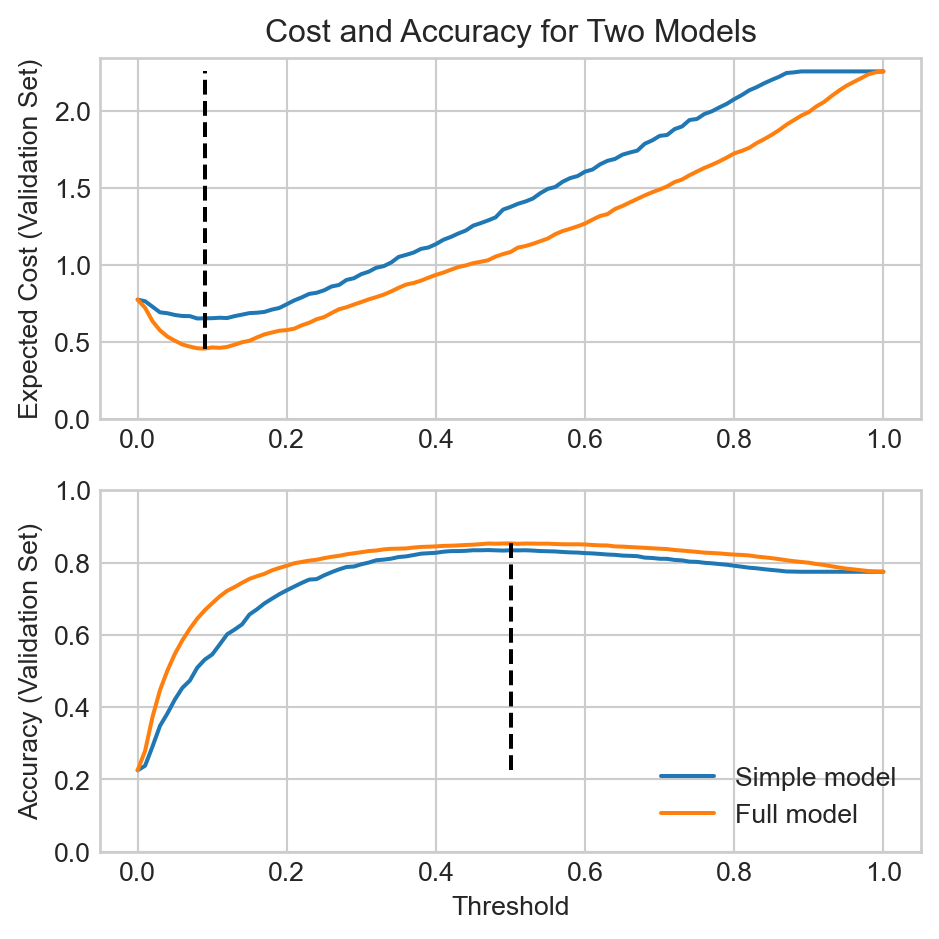
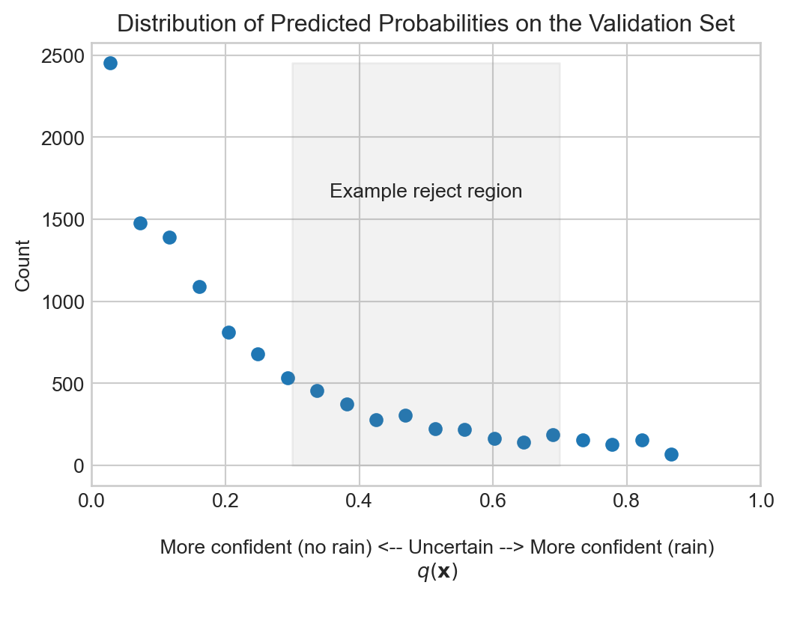
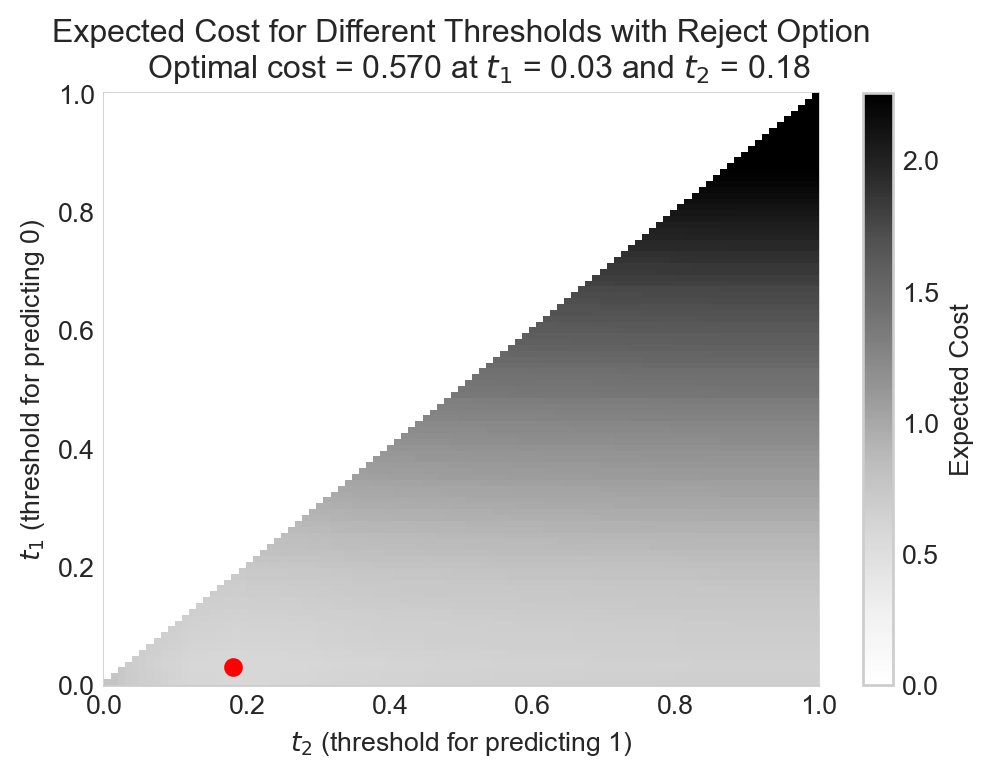
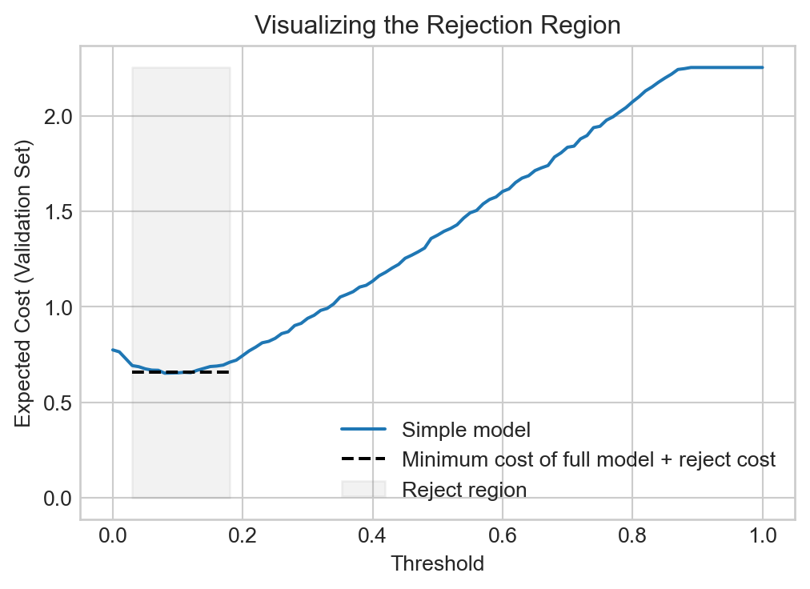

import pandas as pd
import torch
from matplotlib import pyplot as plt
url = "https://raw.githubusercontent.com/middcs/data-science-notes/refs/heads/main/data/australia-weather/weatherAUS.csv"
df = pd.read_csv(url)
df.dropna(inplace=True)
df["y"] = df["RainTomorrow"].map({"No": 0, "Yes": 1})
df["RainToday"] = df["RainToday"].map({"No": 0, "Yes": 1})
df.drop(columns=["Date", "Location", "RainTomorrow"], inplace=True)
# standardize the features of the data frame
for col in ["MinTemp", "MaxTemp", "Rainfall", "Evaporation", "Sunshine", "WindGustSpeed", "WindSpeed9am", "WindSpeed3pm", "Humidity9am", "Humidity3pm", "Pressure9am", "Pressure3pm", "Cloud9am", "Cloud3pm", "Temp9am", "Temp3pm"]:
df[col] = (df[col] - df[col].mean()) / df[col].std()
# one-hot encode the categorical features
df = pd.get_dummies(df, columns=["WindGustDir", "WindDir9am", "WindDir3pm"], drop_first=True, dtype=int, prefix=["gustdir", "wind9", "wind3"], prefix_sep="_")
# add the constant feature
df["constant"] = 18 Decision Theory in Classification
From Predictions to Decisions
Open the live notebook in Google Colab.
Introduction
Last time, we studied a range of metrics for evaluating the performance of a classification model based purely on the correctness or incorrectness of the model’s predictions. In practice, however, we don’t typically use predictive models just for predictions – we use them to inform decisions.
- A model which predicts whether or not it will rain tomorrow is used to help me decide whether or not to bring an umbrella.
- A model which predicts whether or not a tumor is malignant based on medical imaging is used to help a doctor decide what treatment to recommend.
- A model which predicts whether or not a customer will click on an ad is used to help an advertiser decide how much to bid for that ad placement.
Let’s go back for a moment to the confusion matrix of a binary classifier:
| Predicted 0 | Predicted 1 | |
|---|---|---|
| True 0 | TN | FP |
| True 1 | FN | TP |
An important property of decision-making in the real world is that there are costs and benefits associated with each entry of the confusion matrix. In the example of weather prediction:
- True Negative (TN): The model predicts no rain, and no rain occurs. I do not bring my umbrella, but I remain dry and happy.
- False Positive (FP): The model predicts rain, but no rain occurs. I bring my umbrella unnecessarily. I am dry and happy, though slightly inconvenienced.
- False Negative (FN): The model predicts no rain, but it rains. I do not bring my umbrella. I am soaked and unhappy.
- True Positive (TP): The model predicts rain, and it rains. I bring my umbrella, and I remain dry and happy.
Of these four outcomes, the false negative outcome is by far the worst. Thus, if the sole purpose of my model is to help me decide whether or not to bring an umbrella, I should want the model not just to be accurate overall, but more specifically to minimize false negatives (within reason).
More generally:
Cost in Decision Making
Somewhat more generally, I can assign numerical scores to each of the four outcomes in the confusion matrix, each of which represent the Cost associated with that outcome.
Suppose that I evaluated my model on a validation set of 100 examples, finding that the model made 70 true negative predictions, 10 false positives, 5 false negatives, and 15 true positives. I can collect these in the confusion matrix, and then assign costs to each entry of the confusion matrix, as follows:
| Predicted 0 | Predicted 1 | |
|---|---|---|
| True 0 | 70 | 10 |
| True 1 | 5 | 15 |
| Predicted 0 | Predicted 1 | |
|---|---|---|
| True 0 | 0 | 1 |
| True 1 | 10 | 1 |
The expected cost associated with this model is then the sum of the products of the entries of the confusion matrix and the cost matrix, divided by the total number of examples: \[ \text{Expected Cost} = \frac{1}{100} (70 \cdot 0 + 10 \cdot 1 + 5 \cdot 10 + 15 \cdot 0) = 0.6 \]
Let’s formalize this idea with some definitions:
Definition 8.1 (Cost Matrix) The cost matrix associated to a binary classification problem is matrix \(\mathbf{C}\in \mathbb{R}^{2\times 2}\) whose \(ij\)th entry gives the cost associated with predicting outcome \(j\) when the true outcome is \(i\). We typically denote the cost matrix as follows:
\[ \mathbf{C}= \begin{bmatrix} c_{00} & c_{01} \\ c_{10} & c_{11} \end{bmatrix} \]
Definition 8.2 (Confusion Matrix, Mathematical Notation) The confusion matrix associated to a binary classification problem is matrix \(\mathbf{M}\in \mathbb{R}^{2\times 2}\) whose \(ij\)th entry gives the number of examples for which the true outcome is \(i\) and the predicted outcome is \(j\). We typically denote the confusion matrix as follows:
\[ \mathbf{M}= \begin{bmatrix} m_{00} & m_{01} \\ m_{10} & m_{11} \end{bmatrix} \]
Definition 8.3 (Expected Cost Of a Binary Classifier) Given a cost matrix \(\mathbf{C}\in \mathbb{R}^{2\times 2}\), the expected cost of a binary classifier is the sum over all entries of the confusion matrix of the product of the confusion matrix entry and the corresponding cost matrix entry, divided by the total number of examples:
\[ \begin{aligned} \text{Expected Cost} &= \frac{1}{m} \sum_{i=0}^1 \sum_{j=0}^1 m_{ij} c_{ij}\;, \\ m &= \sum_{i=0}^1 \sum_{j=0}^1 m_{ij} \end{aligned} \]
The expected cost is a function of the cost matrix \(\mathbf{C}\). Usually we have the ability to modify the confusion matrix \(\mathbf{M}\) but not the cost matrix \(\mathbf{C}\) (since the costs are determined by the real-world consequences of the model’s predictions), so we typically think of the expected cost as a function of the confusion matrix and write it \(c(\mathbf{M})\).
Model Selection via Expected Cost
The expected cost gives us a new way to score models, differently from metrics like log-likelihood, accuracy, or AUC. If we have a cost matrix \(\mathbf{C}\) that describes the costs associated with our decision context, then we can choose a best model among candidates by choosing the one with the best expected cost, usually as evaluated on validation data.
In this experiment, we’ll consider two ways in which we can select among trained models to minimize expected cost.
Let’s return to the rain prediction problem with logistic regression. We’ll use the same Australian weather data set that we used when introducing classification. This time we’re going to take two additional steps in our data preprocessing:
- We are going to standardize the numerical features. Standardization entails subtracting off the mean of the feature and dividing by the standard deviation of the feature, so that the resulting standardized feature has mean 0 and standard deviation 1.
- We are going to use one-hot encoding to convert the categorical features into multiple binary features.
Standardizing the data features helps optimization algorithms converge more quickly; technically, this reduces the condition number of the Hessian matrix of the loss function.
We’ll split the data into training, validation, and test sets:
from sklearn.model_selection import train_test_split
X = df.drop(columns=["y"])
y = torch.tensor(df["y"].values, dtype=torch.float32).reshape(-1, 1)
X_train, X_temp, y_train, y_temp = train_test_split(X, y, test_size=0.4, random_state=42)
X_val, X_test, y_val, y_test = train_test_split(X_temp, y_temp, test_size=0.5, random_state=42)Now we’re ready to implement our model. We’ll use the same binary logistic regression model that we used in the introduction to classification.
def sigmoid(x):
return 1/(1 + torch.exp(-x))
def binary_cross_entropy(q, y):
return -torch.mean(y * torch.log(q) + (1-y) * torch.log(1-q))
class BinaryLogisticRegression:
def __init__(self, p_features):
self.w = torch.zeros(p_features, 1)
def forward(self, X):
return sigmoid(X @ self.w)
class GradientDescentOptimizer:
def __init__(self, model, lr=0.1):
self.model = model
self.lr = lr
def grad_func(self, X, y):
q = self.model.forward(X)
return 1/X.shape[0] * ((q - y).T @ X).T
def step(self, X, y):
self.model.w -= self.lr * self.grad_func(X, y)This time let’s wrap the training loop inside a function:
def train(model, X_train, y_train, max_epochs = 1000, tol = 1e-8, lr = 0.01):
opt = GradientDescentOptimizer(model, lr=lr)
losses = []
for epoch in range(max_epochs):
q = model.forward(X_train)
loss = binary_cross_entropy(q, y_train)
losses.append(loss.item())
opt.step(X_train, y_train)
if len(losses) > 1 and abs(losses[-1] - losses[-2]) < tol:
break
return lossesmodel = BinaryLogisticRegression(p_features=X_train.shape[1])
losses = train(model, torch.tensor(X_train.values, dtype=torch.float32), y_train, max_epochs=1000, tol=1e-8, lr=0.1)Model Selection via Expected Cost
With our model in hand, let’s implement the experiment in which we select a model based on expected cost. We’ll first implement the confusion matrix and expected cost as functions:
def confusion_matrix(y_pred, y_true, threshold=0.5):
counts = torch.zeros((2, 2), dtype=torch.float32)
for i in range(2):
for j in range(2):
counts[i, j] = ((y_pred == j) & (y_true == i)).sum()
return counts
def expected_cost(confusion_matrix, cost_matrix):
m = confusion_matrix.sum().item()
return (confusion_matrix * cost_matrix).sum().item() / mNow we’ll do our main experiment. In this experiment, we’ll pick two sets of features and train our model on each of these feature sets. We’ll then evaluate the expected cost and accuracy of each model on the validation set across a range of thresholds, and we’ll compare the results. We’ll first define our two sets of features and our cost matrix:
col_sets = {
"Simple" : ["RainToday", "Humidity3pm"],
"Full" : X_train.columns.drop("constant").tolist()
}
C = torch.tensor([[0, 1], [10, 0]], dtype=torch.float32)In our main experimental loop, we train a model on the specified set of features and then evaluate the expected cost and accuracy of the model on the validation set across a range of thresholds.
# convenience function for selecting the specified features from a data frame and converting to a tensor
def select_features(X_df, cols):
if "constant" not in cols:
cols = ["constant"] + cols
return torch.tensor(X_df[cols].values, dtype=torch.float32)
# train the simple model and obtain predicted probabilities on the validation set
X_train_tensor = select_features(X_train, col_sets["Simple"])
model_simple = BinaryLogisticRegression(p_features=X_train_tensor.shape[1])
losses = train(model_simple, X_train_tensor, y_train, max_epochs=1000, tol=1e-8, lr=0.1)
q_val_simple = model_simple.forward(select_features(X_val, col_sets["Simple"]))
X_train_tensor = select_features(X_train, col_sets["Full"])
model_full = BinaryLogisticRegression(p_features=X_train_tensor.shape[1])
losses = train(model_full, select_features(X_train, col_sets["Full"]), y_train, max_epochs=1000, tol=1e-8, lr=0.1)
q_val_full = model_full.forward(select_features(X_val, col_sets["Full"]))def costs_and_accuracies(q_val, y_val, C):
costs = []
accuracies = []
for t in torch.linspace(0, 1, 101):
y_pred = (q_val >= t).int()
cm = confusion_matrix(y_pred, y_val, threshold=t)
c = expected_cost(cm, C)
acc = (cm[0, 0] + cm[1, 1]) / cm.sum()
accuracies.append(acc.item())
costs.append(c)
return costs, accuraciesNow we’re ready to run the experiment and plot the results.
Code
fig, ax = plt.subplots(2, 1, figsize=(5, 5))
T = torch.linspace(0, 1, 101)
costs_simple, accuracies_simple = costs_and_accuracies(q_val_simple, y_val, C)
costs_full, accuracies_full = costs_and_accuracies(q_val_full, y_val, C)
ax[0].plot(T, costs_simple, label="Simple model")
ax[0].plot(T, costs_full, label="Full model")
ax[1].plot(T, accuracies_simple, label="Simple model")
ax[1].plot(T, accuracies_full, label="Full model")
ax[0].vlines(T[torch.argmin(torch.tensor(costs_full))], min(costs_full), max(costs_full), color="black", linestyle="dashed")
ax[1].vlines(T[torch.argmax(torch.tensor(accuracies_full))], min(accuracies_full), max(accuracies_full), color="black", linestyle="dashed")
ax[0].set_ylim(0, None)
ax[1].set_ylim(0, 1)
ax[0].set_ylabel("Expected Cost (Validation Set)")
ax[0].set_title("Cost and Accuracy for Two Models")
ax[1].set_xlabel("Threshold")
ax[1].set_ylabel("Accuracy (Validation Set)")
plt.tight_layout()
plt.legend()
In this experiment, scoring the model by expected cost and scoring the model by accuracy both lead to use choosing the full model over the simpler one. However, when scoring by accuracy the different might seem negligible:
print(f"Simple model: best accuracy = {max(accuracies_simple):.3f} at t={T[torch.argmax(torch.tensor(accuracies_simple))]:.2f}")
print(f"Full model: best accuracy = {max(accuracies_full):.3f} at t={T[torch.argmax(torch.tensor(accuracies_full))]:.2f}")Simple model: best accuracy = 0.835 at t=0.47
Full model: best accuracy = 0.853 at t=0.50Although there is a noticeable difference in accuracy, it doesn’t necessarily appear that it should be a big deal. However, the expected cost highlights the difference between the two models much more starkly:
print(f"Simple model: best expected cost = {min(costs_simple):.3f} at t={T[torch.argmin(torch.tensor(costs_simple))]:.2f}")
print(f"Full model: best expected cost = {min(costs_full):.3f} at t={T[torch.argmin(torch.tensor(costs_full))]:.2f}")Simple model: best expected cost = 0.653 at t=0.08
Full model: best expected cost = 0.457 at t=0.09Here’s one way to think about what’s happening here:
When we score the models by accuracy, the models achieve best accuracy in a region of threshold space in which their two accuracies are relatively close.
On the other hand, the cost matrix \(\mathbf{C}\) that we used in this experiment assigns a very high cost to false negatives. This means that the expected cost favors models that more frequently predict positives, which corresponds to lowering the threshold. However, in the low-threshold region of the threshold space, the full model is considerably more accurate than the simple model, which in turn means that the full model has a much lower expected cost than the simple model in this region.
“I Don’t Know”: The Reject Option
In many application settings, it may be desirable for a model to have an option to “reject” or decline to make a prediction. For example, a model that predicts whether or not a tumor is malignant may be used to help a doctor decide what treatment to recommend. In some cases, the model may be very uncertain about its prediction for a given patient, and it may be desirable for the model to have the option to “reject” making a prediction for that patient, and instead pass the data off to a human expert for further analysis. The process of manual analysis likely to be more expensive than the automated prediction of the model, but is also likely to be more accurate.
Generalizing slightly, we can think of the reject option as a third possible outcome for a binary classifier, in which the classifier’s confidence is sufficiently low that the classifier actually opts to pass the predictive task to a more expensive process (such as a human or a more expensive model).
In the context of binary classification, we would typically implement a reject option by introducing two thresholds \(t_1\) and \(t_2\), with \(t_1 < t_2\).
Definition 8.4 (The Reject Option in Binary Classification) A binary classifier with a reject option has three possible outcomes based on the predicted score \(q(\mathbf{x})\) and two thresholds \(t_1 < t_2\):
- If \(q(\mathbf{x}) < t_1\), then the classifier predicts 0.
- If \(q(\mathbf{x}) > t_2\), then the classifier predicts 1.
- If \(t_1 \leq q(\mathbf{x}) \leq t_2\), then the classifier rejects or declines to make a prediction.
There is typically a cost associated with the reject option, which is usually less than the cost of a false positive or false negative, but more than the cost of a true positive or true negative.
Example in Rain Prediction
Suppose that we have access to the simple model as part of the free tier of an API. This model is useful, but also less reliable than the full model, which is only available on the paid tier. Each query to the full model costs 0.2 units. So, if we need to make an informed decision each day about the likelihood of rain, we may wish to use the simple model on days when the simple model is relatively certain about the likelihood of rain, and to use the full model on days when the simple model is relatively uncertain about the likelihood of rain.
Code
fig, ax = plt.subplots(1, 1, figsize=(6, 4))
counts, bin_edges = torch.histogram(q_val_simple, bins=20)
ax.scatter((bin_edges[:-1] + bin_edges[1:]) / 2, counts, label="Simple model")
ax.set_xlabel(r"""
More confident (no rain) <-- Uncertain --> More confident (rain)
$q(\mathbf{x})$
""")
ax.fill_between([0.3, 0.7], 0, max(counts), color="grey", alpha=0.1, label="Use simple model")
ax.annotate("Example reject region", xy=(0.5, max(counts)/2), xytext=(0.5, max(counts)/1.5), ha="center")
ax.set_ylabel("Count")
ax.set_xlim(0, 1)
t = ax.set_title("Distribution of Predicted Probabilities on the Validation Set")
model_simple on the validation set. The shaded region indicates an example reject region, in which we might want to query model_full instead of model_simple.
For this reason, we might want to develop a strategy that incorporates both models.
- First, we query the free, simple model.
- If the simple model is relatively certain about the likelihood of rain, then we use the simple model’s prediction to make our decision.
- If the simple model is relatively uncertain about the likelihood of rain, then we query the paid, full model, and we use the full model’s prediction to make our decision.
This will work out well for us if the benefit of using the more expensive full model on the uncertain days outweighs the cost of querying the full model on those days.
As a baseline, let’s compute the expected cost of using the simple model all the time (with its optimal threshold) and the expected cost of using the full model all the time (with its optimal threshold), including the cost of querying the full model in the latter case.
reject_cost = 0.2
print(f"{min(costs_simple):.3f} = expected cost of using simple model all the time")
print(f"{min(costs_full) + reject_cost:.3f} = expected cost of using full model all the time (including cost of querying full model)")0.653 = expected cost of using simple model all the time
0.657 = expected cost of using full model all the time (including cost of querying full model)So, using the simple model all the time is better than using the full model all the time, but maybe we can do better by using the simple model when it’s relatively certain and using the full model when the simple model is relatively uncertain. Let’s find out by searching over a grid of possible values for \(t_1\) and \(t_2\).
Rejection Threshold Selection
As before, we can use the expected cost to help us select the thresholds \(t_1\) and \(t_2\), but this time our expected cost becomes more complex. We need to define the two thresholds that we’ll use to define the positive, reject, and negative regions of prediction. We’ll also need to supply the optimal threshold for the full model.
def expected_cost_reject_option(q_val, t_1, t_2, t_full, reject_cost = 0.5):
# calculate the indices for which we are going to reject, and the total cost of those rejections
reject_ix = (t_1 <= q_val) & (q_val <= t_2)
total_reject_cost = reject_ix.sum().item() * reject_cost
# for the non-rejected examples, we predict 1 if q_val > t_2 and 0 if q_val < t_1. For the rejected examples, we predict according to the full model with threshold t_full.
y_pred = torch.zeros_like(q_val, dtype=torch.int32)
y_pred[q_val > t_2] = 1
y_pred[reject_ix] = (q_val_full[reject_ix] >= t_full).int()
# calculate the confusion matrix and expected cost for the non-rejected examples
cm = confusion_matrix(y_pred, y_val, threshold=0)
total_cost = expected_cost(cm, C) * cm.sum().item() + total_reject_cost
cost_per_example = total_cost / cm.sum().item()
return cost_per_exampleNow we can run our grid search:
t_1_lim = (0.0, 1)
t_2_lim = (0.0, 1)
n_grid = 101
costs = torch.zeros((n_grid, n_grid))
best_cost = float("inf")
best_t_1 = None
best_t_2 = None
for i, t_1 in enumerate(torch.linspace(t_1_lim[0], t_1_lim[1], n_grid)):
for j, t_2 in enumerate(torch.linspace(t_2_lim[0], t_2_lim[1], n_grid)):
if t_2 >= t_1:
cost = expected_cost_reject_option(q_val_simple, t_1, t_2, t_full=T[torch.argmin(torch.tensor(costs_full))], reject_cost=0.2)
costs[i,j] = cost
if cost < best_cost:
best_cost, best_t_1, best_t_2 = cost, t_1, t_2Let’s go ahead and visualize the results:
Code
fig, ax = plt.subplots(1, 1, figsize=(6, 4))
im = ax.imshow(costs, origin="lower", aspect="auto", zorder = 100, extent = [t_1_lim[0], t_1_lim[1], t_2_lim[0], t_2_lim[1]], )
ax.set_xlabel(r"$t_2$ (threshold for predicting 1)")
ax.set_ylabel(r"$t_1$ (threshold for predicting 0)")
ax.scatter(best_t_2, best_t_1, color="red", label="Best thresholds", zorder=200)
fig.colorbar(im, ax=ax, label="Expected Cost")
t = ax.set_title(
fr"""Expected Cost for Different Thresholds with Reject Option
Optimal cost = {best_cost:.3f} at $t_1$ = {best_t_1:.2f} and $t_2$ = {best_t_2:.2f}""")
We are able to reduce our expected cost in the rain prediction problem by strategically using the full model on the examples for which the simple model is relatively uncertain. Comparison to Figure 8.1 indicates that the optimal reject region corresponds to a threshold zone in which the full model has an especially large advantage in expected cost over the simple model.
Code
fig, ax = plt.subplots(1, 1, figsize=(6, 4))
T = torch.linspace(0, 1, 101)
costs_simple, accuracies_simple = costs_and_accuracies(q_val_simple, y_val, C)
costs_full, accuracies_full = costs_and_accuracies(q_val_full, y_val, C)
ax.plot(T, costs_simple, label="Simple model")
ax.plot([best_t_1, best_t_2], [min(costs_full) + 0.2, min(costs_full) + 0.2], color="black", linestyle="--", label="Minimum cost of full model + reject cost")
# ax.plot(T, costs_full, label="Full model")
ax.fill_between([best_t_1, best_t_2], 0, max(costs_full), color="grey", alpha=0.1, label="Reject region")
ax.set_xlabel("Threshold")
ax.set_ylabel("Expected Cost (Validation Set)")
ax.set_title("Visualizing the Rejection Region")
plt.legend()
The topic of decision theory is very rich both experimentally and theoretically, and we have only scratched the surface here.
© Phil Chodrow, 2025